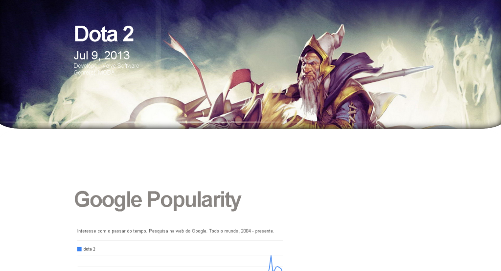
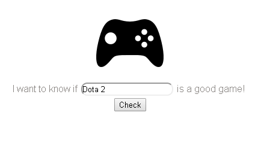
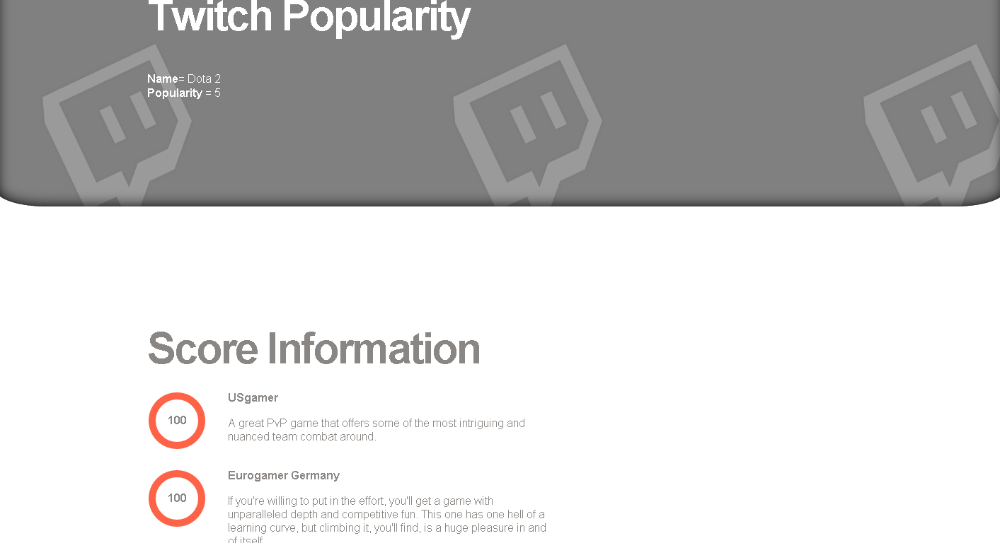

Game Search - A PHP Website
Game Search is a website that implements diferent sources in order to provide information about a computer or console game, with this information the user is able to determine if a game is good or not.
Code
This project was developed using PHP and works without a Database, all the data is supplied by multiple sources:
- Twitch.TV (Game Realtime Popularity)
- Metacritic (Game Information and Score)
- Google (Keyword Popularity by Time)
Its possible to extract the information from this sources using php curl function.
Curl Example:
function get_data($url) {
$ch = curl_init();
$timeout = 5;
curl_setopt($ch, CURLOPT_URL, $url);
curl_setopt($ch, CURLOPT_RETURNTRANSFER, 1);
curl_setopt($ch, CURLOPT_CONNECTTIMEOUT, $timeout);
$data = curl_exec($ch);
curl_close($ch);
return $data;
}
Why
The idea behind this project was to create a site that shows if a game is good or not based on external resourses, including Twitch Popularity and Google Popularity
Preview
This image shows a working version of the website

This is a poor version of the Home Page

The Twitch Popularity and Score Information
